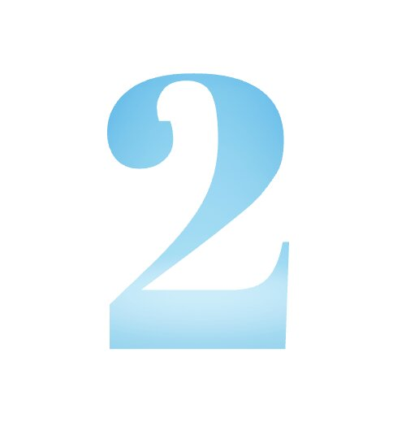

Select Projects
Visual Transit Simulator
Language & Tools Utilized: Java, JavaScript, Visual Studio Code, Git, GitHub, Mockito.
- Interactive software which models vehicle transit around the University of Minnesota campus, simulating the behavior of vehicles and passengers.
- Engaged in a collaborative effort with two teammates to improve software efficiency and usability.
- Tasks included: creating and updating a UML class diagram, optimizing and restructuring the codebase for performance, and building/improving test doubles to maintain functionality.

Bitwise & PuzzleBox
Language & Tools Utilized: C, Assembly, Visual Studio Code, GDB
- Solved programming puzzles to practice bit-level operations and increase understanding of integer and floating-point representations.
- Debugged and reverse engineered a puzzle program, in order to determine the correct inputs to pass a sequence of phases and complete the program successfully.